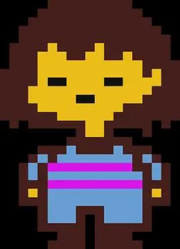
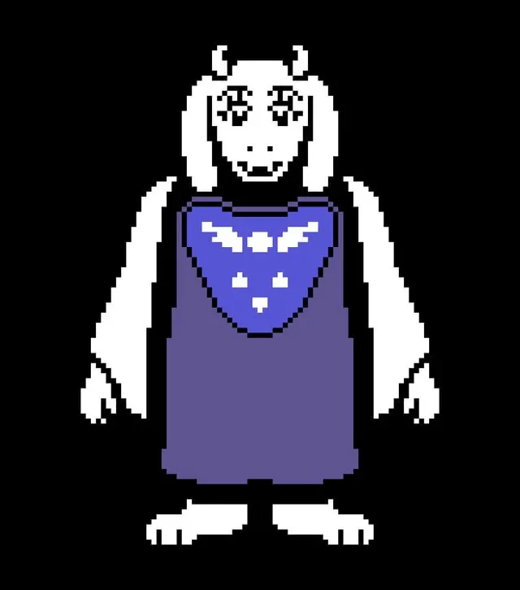
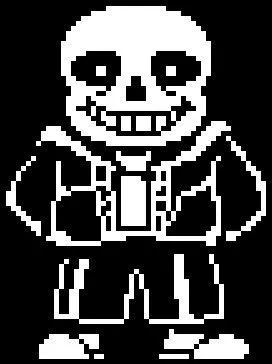
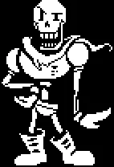

Descrição do Jogo
Undertale é um jogo de RPG criado por Toby Fox, lançado em 2015.
O jogo é conhecido por sua narrativa envolvente, personagens memoráveis e trilha sonora incrível.
Uma das características mais marcantes de Undertale é a possibilidade de escolher entre lutar ou poupar os inimigos, o que afeta o desenrolar da história e o final do jogo.
↑ Voltar ao topoHistória
A história de Undertale gira em torno de uma criança humana que cai no mundo dos monstros(Underground). O jogador controla esse humano e toma decisões que influenciam o curso da história.
O Underground está isolado da superfície há gerações por uma barreira mágica. Para voltar para casa, é preciso atravessar o Underground enfrentando os moradores.
Mas o jogo tem um diferencial:
em vez de simplesmente lutar, é possível conversar, negociar e poupar cada inimigo, e as escolhas feitas ao longo da jornada mudam completamente o rumo da história e o final que você recebe.
↑ Voltar ao topoPersonagens Principais
O jogo apresenta uma variedade de personagens únicos, cada um com sua própria personalidade e história.
Frisk, O Humano
Frisk é o protagonista do jogo, um humano que cai no mundo dos monstros. O jogador controla Frisk e toma decisões que influenciam o curso da história.

Toriel, A Mãe
Toriel é a personagem que cuida de Frisk no início do jogo. Ela é gentil e protetora, mas também a rainha do Reino dos Monstros.
Afim de proteger Frisk, Toriel tenta impedir que ele continue sua jornada, mas eventualmente permite que ele siga seu caminho.

Sans, O Esqueleto
Um dos personagens mais populares é Sans, um esqueleto preguiçoso e sarcástico que se tornou um ícone da cultura pop.

Papyrus, O Irmão de Sans
Papyrus é o irmão de Sans, que sonha em se tornar soldado real do Reino dos Monstros.
Ele é idealista e muito dedicado a sua função, embora às vezes seja um pouco ingênuo.

Esses são apenas alguns dos personagens que tornam Undertale uma experiência única e memorável para os jogadores.
Vou deixar um link da wiki da comunidade Personagens Principais.
↑ Voltar ao topo